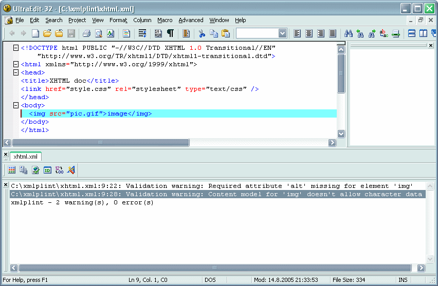
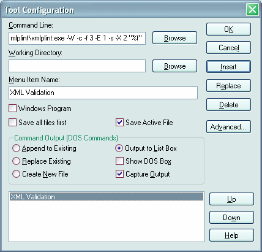

xmlplint command line tool
Xmlplint is command line tool for parsing/validating XML documents. Xmlplint means something like "xml parsing/parsifal lint" (http://en.wikipedia.org/wiki/Lint_programming_tool). Name resemblance with xmllint is obvious of course (xmlllint is very similar command line tool based on libxml framework). I chose the name just because I think it's easy to remember - not because I wanted people to mix up these tools. Xmllint/libxml offers quite impressive list of features but xmlplint offers some unique features like for instance streaming DTD validation (read: very fast and using memory sparingly) and partial DTD validation based on uris.
Xmlplint in action:

Features:
- Outputs: roundtrip, sax events, canonical form (http://www.jclark.com/xml/canonxml.html). Also verbose or simple error reporting modes are available - xmlplint can be easily integrated with text editors.
- Inputs: stdin, FILE* or protocols available by libcurl (HTTP, FTP, HTTPS etc.)
- Simple XML Catalogs support (useful for mapping known publicIDs for local resources for example).
- Well-formedness checking and validation with extensive error/warning location information.
- Filtered DTD validation (based on namespace uris); this is kind of having XML namespaces support in DTDs on parser level.
- Support for extensive number of encodings via libiconv library
- Parsing benchmarking
Installation
Xmlplint is included in the parsifal library distribution files in source form. Win32 binary files
are also available. You can find them at the Download section.
Xmlplint uses libiconv library so you must have one too. Get it for example here
GNU.ORG libiconv. Also Win32 binary distribution doesn't include iconv.dll so you must download
libiconv-1.9.1.bin.woe32.zip or similar.
Licence
Xmlplint uses libcurl library. Curl and libcurl are licensed under a MIT/X derivate license.
GNU libiconv uses LGPL licence
Parsifal XML Parser and xmlplint command line tool are Public Domain software
| xmlplint usage |
|---|
|
| catalog.xml example |
|---|
|
This catalog example shows how to map publicIDs into local files:
- Download xhtml 1.0 dtds from w3c.org and extract them into
c:\xmlplint\DTD\xhtmldirectory. - Save this catalog.xml into xmlplint directory and set environment variable
XML_CATALOG_FILES=c:\xmlplint\catalog.xml - Now when your document uses publicId "-//W3C//DTD XHTML 1.0 Transitional//EN" xmlplint will fetch dtds from the local directory instead of loading them from the internet. You must of course use -c flag for xmlplint to enable xml catalogs support.
More info on xml catalogs can be found here and here
Integration with text editors
Here are settings for adding XML validation into UltraEdit-32 text editor. Tool configuration command line:
C:\xmlplint\xmlplint.exe -W -c -f 3 -E 1 -s -X 2 "%f"Remove -c flag if you do not intent to use xml catalogs support (described above).
Choose appropriate settings for the tool "XML Validation":

Now choose preferred key combination/mapping for your tool and you can simply press that key combination to validate document that is currently active document in ultraedit. (If XML validation is at the top of the tool list in the tool configuration dialog the default key mapping is CTRL+SHIFT+0).
Copyright © 2002-2005 Toni
Uusitalo.
Send mail, suggestions and bug reports to
Last modified: 15.08.2005 23:00